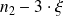
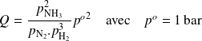

Sujet PC 2016-02 : Chimie de l'ammoniac / corrigé complet
À propos de l'ammoniac
Le sujet est téléchargeable ci-dessous.
Les corrigé des questions de physique-chimie sont de Jean-Marc Vince et Thomas Zabulon ! Merci à eux.
Diagramme binaire eau-ammoniac
Cette partie ne nécessite pas l'usage de l'informatique.
Les données du sujet sont disponibles en fin de sujet.
1. Solubilité de l'ammoniac dans l'eau
Question
a. L'ammoniac est un des composés les plus solubles dans l'eau ; pourquoi ?
Remarque
On note avec un indice 1 les grandeurs relatives à l'ammoniac et 2 celles relatives à l'eau.
L'ammoniac peut former des liaisons H avec l'eau, dans les deux sens (O–H···N et N–H···O), il est donc très soluble dans l'eau.
Question
b. Évaluer la solubilité de l'ammoniac dans l'eau à 20 °C.
On lit sur la courbe de liquidus, à 20 °C : , soit 330 g d'ammoniac pour 670 g d'eau, ou encore 330 g d'ammoniac par kilogramme de mélange. Sans information supplémentaire, on ne peut pas aller plus loin.
Si on suppose que ce mélange a la même densité que l'eau (c'est sans doute assez grossier), cela donne donc 330 g d'ammoniac par litre de mélange, soit .
Complément :
L'« Usuel de chimie générale et minérale »
de Bernard et Busnot donne
à 20°C (il doit être possible de retrouver cette valeur à l'aide du document trouvable à cette adresse) : 330 g d'ammoniac par kilogramme de mélange, soit 1,134 L, conduit à
.
Question
c. La dissolution de l'ammoniac dans l'eau est-elle un processus endothermique ou exothermique ?
On constate sur le diagramme que quand la température augmente, la fraction massique (en phase liquide) en eau augmente, donc celle en ammoniac diminue. Par conséquent, la solubilité de l'ammoniac dans l'eau diminue quand la température augmente, l'équilibre
 est donc déplacé vers la gauche quand la température augmente, la dissolution de l'ammoniac dans l'eau est donc exothermique en vertu de la loi de van't Hoff.
est donc déplacé vers la gauche quand la température augmente, la dissolution de l'ammoniac dans l'eau est donc exothermique en vertu de la loi de van't Hoff.
2. On considère, à l'équilibre thermodynamique à 20 °C sous 1 bar,
 grammes d'un mélange initialement équimassique en
et
. On souhaite déterminer, par titrage, la composition de la phase liquide. On suppose que l'on se trouve à l'équilibre thermodynamique.
grammes d'un mélange initialement équimassique en
et
. On souhaite déterminer, par titrage, la composition de la phase liquide. On suppose que l'on se trouve à l'équilibre thermodynamique.
Question
a. De quelle masse
doit-on partir pour disposer d'une masse de liquide
?
On applique le théorème des moments : avec les notations habituelles. Or (mélange équimassique), et , d'où (pas plus de deux chiffres significatifs vu la précision sur les positions des points V, M et L).
Question
b. Proposer un mode opératoire « détaillé »
pour déterminer la quantité de matière d'ammoniac dans la phase liquide sachant que l'on dispose de diverses solutions titrantes à
 .
. « Détaillé »
signifie qu'il faut donner l'ensemble du protocole, proposer des volumes de prélèvements, des concentrations de réactifs, etc.
L'idée consiste bien sûr à titrer la phase liquide par un acide. On peut utiliser l'acide chlorhydrique (mais on risque de former des fumées de chlorure d'ammonium) ou l'acide nitrique. La concentration de l'acide étant de , on va chercher à titrer 10 mL d'une solution d'ammoniac à concentration du même ordre de grandeur, pour obtenir un volume à l'équivalence aussi d'environ 10 mL.
Exemple :
on introduit 1,00 mL de la phase liquide (prélevé à l'aide d'une pipette jaugée) dans une fiole jaugée de 100 mL, on ajoute de l'eau, on agite puis on ajoute de l'eau jusqu'au trait de jauge et on agite à nouveau. On obtient ainsi une solution S de concentration environ . On prélève alors 10,00 mL de cette solution S et on titre cet échantillon par de l'acide nitrique de concentration . L'équivalence devrait se situer vers 17 mL.
On peut effectuer un suivi pH-métrique (brutale diminution de pH à l'équivalence), conductimétrique (changement de pente à l'équivalence) ou à l'aide d'un indicateur coloré (hélianthine par exemple).
Équilibre de synthèse de l'ammoniac
L'objectif de cette partie est de tracer la courbe représentant le taux de conversion de l'ammoniac en fonction de la température
pour différentes valeurs de la pression totale
 . L'état initial correspond à un mélange stoechiométrique en
et
.
. L'état initial correspond à un mélange stoechiométrique en
et
.
On obtient, pour différentes valeurs de la pression , et les courbes de la figure 1 du sujet.
1. Analyse des courbes
Question
a. La transformation est-elle endo ou exothermique ?
On constate, qu'à pression donnée, le taux de conversion diminue quand la température augmente. Or une telle augmentation de température déplace l'équilibre dans le sens de la réaction endothermique. C'est donc le sens dans lequel l'ammoniac est consommé puisque le taux de conversion diminue. Ainsi la transformation étudiée (production de l'ammoniac) est exothermique.
Question
b. Attribuer la pression totale aux différentes courbes.
Au cours de la transformation, on constate que la quantité de matière gazeuse diminue, ainsi la conversion de et en est favorisée par une augmentation de pression (à température fixée). On en déduit que la courbe la plus élevée (taux de conversion le plus fort) correspond à la plus forte pression 5,0 bar et que la courbe la plus basse (taux de conversion le plus faible) correspond à la plus faible pression 1,0 bar .
La courbe « du milieu » correspond donc à la pression 2,0 bar.
Question
c. Discuter du choix des paramètres température/pression pour l'optimisation de la synthèse industrielle de l'ammoniac.
La synthèse industrielle de l'ammoniac est donc optimisée par une faible température (mais un compromis doit être trouvé pour assurer une vitesse de réaction convenable industriellement, la synthèse ne devant pas s'effectuer à vitesse trop lente). Cette synthèse est aussi optimisée à haute pression mais alors le coût des installations industrielles résistant à ces pressions peut devenir important. Typiquement en industrie la température est de l'ordre de 450°C et la pression de l'ordre de 300 bar pour cette synthèse.
2. Le programme python joint contient la trame de résolution de l'exercice. Il s'agit, dans l'ordre que vous souhaitez :
de présenter et d'expliquer la méthode de résolution numérique ;
de compléter le programme à l'aide des questions (et informations) suivantes.
Le script Python est reproduit ci-dessous.
"""Taux de conversion de l'ammoniac en fonction de la température."""from math import log, pow, exp
import matplotlib.pyplot as plt
# Variables globales utilisées dans l'ensemble du programmeR = 8.314
n1 = 1.0 # quantité initiale de N2 (mole)
n2 = 3.0 # quantité initiale de H2 (mole)
n3 = 0.0 # quantité initiale de NH3 (mole)
Tmin = 400.0 # température minimale de l'étude (kelvin)
Tmax = 800.0 # température maximale de l'étude (kelvin)
deltaT = 10.0 # intervalle de température entre deux calculs (kelvin)
# ========================================================================# Début de la partie à modifier par le candidatDrH0 = ? 92000 # enthalpie standard de réaction en J/mol : signe à préciser
DrS0 = ? 200 # entropie standard de réaction en J/K/mol : signe à préciser
def A(ksi, T, P):
""" Calcul de l'affinité chimique de la réaction. Paramètres ksi (float): avancement de la réaction T (float): température (kelvin) P (float): pression globale (bar) Résultat float: affinité chimique de la réaction en J/mol """ # À compléterdef ksi_eq(mini, maxi, precision, T, P):
""" Calcul de l'avancement à l'équilibre Paramètres mini (float): avancement minimum à considérer maxi (float): avancement maximum à considérer precision (float): précision absolue souhaitée pour le résultat T (float): température (kelvin) P (float): pression globale (bar) Résultat float: valeur approchée de l'avancement à l'équilibre à ±precision près """ # À compléterdef plot_taux(P):
""" Calcul d'une série de points de la courbe taux de conversion=f(T). Paramètre P (float): pression globale (bar) Résultat (liste des abscisses, liste des ordonnées) des points calculés """Temp = [] # abscisses : température
Taux = [] # ordonnées : taux de conversion
# À compléter # Exemple d'appel de ksi_eq :taux = ksi_eq(0.00001, min(n1, n2/3), 0.001, T, P)
return Temp, Taux
# Fin de la partie à modifier par le candidat# ========================================================================# Tracé du taux d'avancement en fonction de la température pour des# pressions de 1, 2 et 5 barfor P in (1, 2, 5):
X, Y = plot_taux(P)
plt.plot(X, Y)
plt.xlabel("Température (K)")
plt.ylabel("Taux de conversion")
plt.title("Synthèse de l'ammoniac")
plt.show()
Question
a. Préciser le signe de l'enthalpie standard et de l'entropie standard de réaction (notées DrH0 et DrS0 dans le programme).
La réaction étant exothermique, l'enthalpie standard de réaction est négative. La quantité de matière gazeuse diminuant, l'entropie standard de réaction est négative.
DrH0 = -92000 # enthalpie standard de réaction en J/mol : signe à préciser
DrS0 = -200 # entropie standard de réaction en J/K/mol : signe à préciser
Question
b. Compléter la fonction A(ksi, T, P) calculant l'affinité chimique du système en fonction de l'avancement de la réaction, de la température et de la pression (cette fonction peut, bien sûr, faire appel aux variables globales définies en tête de programme).
On écrit un tableau d'avancement en notant
 l'avancement.
l'avancement.
|
|
| |
état initial |
|
|
|
état courant |
|  |
|


L'affinité chimique se calcule selon
où
 est le quotient réactionnel qui s'exprime en fonction des pressions partielles selon
est le quotient réactionnel qui s'exprime en fonction des pressions partielles selon

On calcule ces pressions partielles avec le tableau d'avancement en remarquant que le nombre total de moles gazeuses vaut :
soit
Avec la relation , on en déduit
def A(ksi, T, P):
""" Calcul de l'affinité chimique de la réaction. Paramètres ksi (float): avancement de la réaction T (float): température (kelvin) P (float): pression globale (bar) Résultat float: affinité chimique de la réaction en J/mol """ # À compléterA = -DrH0 + T * DrS0 - \
R * T * log((pow((n3+2*ksi),2) * pow((n1+n2+n3-2*ksi), 2)) / \
(pow((n2-3*ksi), 3) * (n1-ksi) * pow(P, 2)))
return A
Question
c. Compléter la fonction ksi_eq(mini, maxi, precision, T, P) calculant l'avancement à l'équilibre en fonction de la température et de la pression (entre la valeur mini et la valeur maxi avec une précision sur l'avancement : precision).
Curieusement, à la lecture du script, aucun module n'était importé en dehors de quelques fonctions mathématiques et de matplotlib.pyplot pour le tracé des courbes. Il semblerait donc que les examinateurs s'attendaient à ce que les candidat-e-s écrivent le code de résolution de l'équation, et non d'utiliser les fonctions des modules disponibles pour les méthodes numériques.
Dans ce cas, vu qu'un intervalle de départ est précisé dans les arguments, une méthode de dichotomie était sans doute attendu.
La valeur de l'avancement à l'équilibre est définie par .
Il faut donc programmer la résolution de cette équation d'inconnue .
def ksi_eq(mini, maxi, precision, T, P):
""" Calcul de l'avancement à l'équilibre Paramètres mini (float): avancement minimum à considérer maxi (float): avancement maximum à considérer precision (float): précision absolue souhaitée pour le résultat T (float): température (kelvin) P (float): pression globale (bar) Résultat float: valeur approchée de l'avancement à l'équilibre à ±precision près """ # À compléterm, M = A(mini, T, P), A(maxi, T, P)
if m * M > 0:
return None
while abs(M - m) > precision :
moy = A((mini + maxi) /2, T, P)
if moy * m > 0 :
mini, maxi = moy, maxi
else :mini, maxi = mini, moy
m, M = A(mini, T, P), A(maxi, T, P)
return((mini + maxi) /2)
Question
d. Compléter la fonction plot_taux(P) permettant, pour une valeur de pression passée en paramètre, de calculer deux tableaux de valeurs : température et taux de conversion.
Ces tableaux sont exploités ensuite pour le tracé des courbes. Celles-ci peuvent, éventuellement, apparaître sur une seconde fenêtre.
Le taux de conversion est défini par
soit ici avec les proportions stœchiométriques de départ